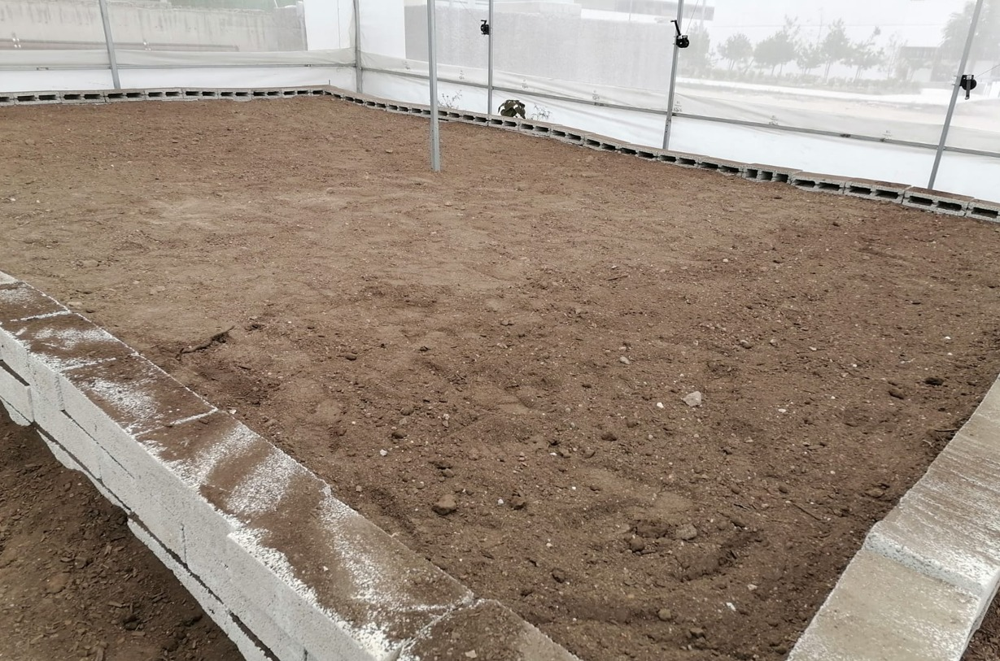
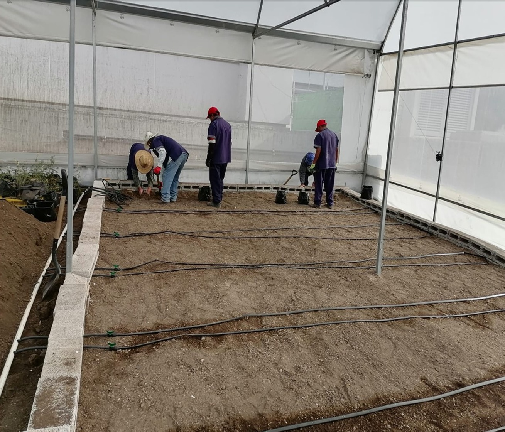
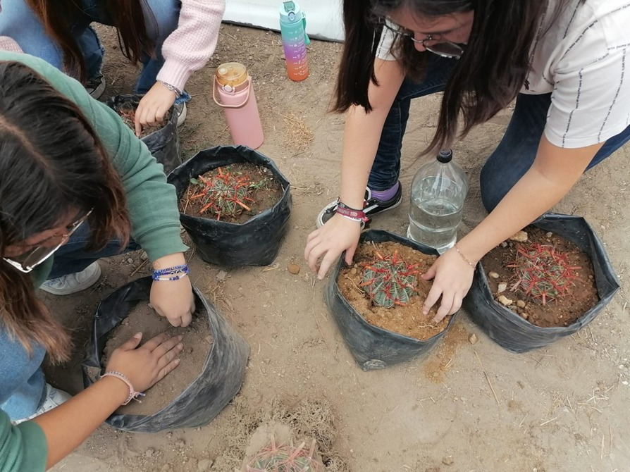
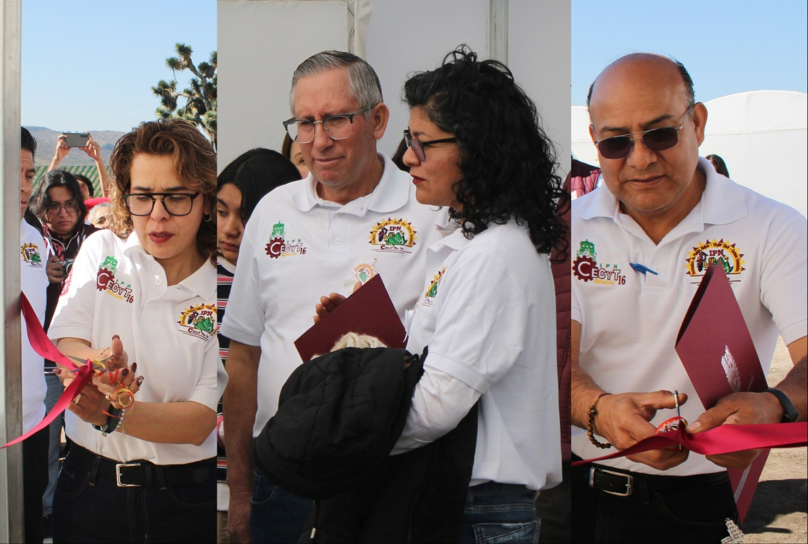

El proyecto del invernadero en una institución educativa de nivel medio superior comenzó con la iniciativa de establecer un espacio controlado que permita el cultivo y propagación de especies vegetales nativas del "Valle del Mezquital" en el Estado de Hidalgo, una zona árida. Este invernadero se diseñó para abordar los desafíos climáticos de la región, proporcionando un entorno controlado para el cultivo de plantas nativas adaptadas a condiciones adversas. Además de ser un espacio educativo, el proyecto tiene como objetivo promover la conservación de la biodiversidad local mediante el uso de técnicas biotecnológicas.


¿Qué es un Invernadero?
Un invernadero es una instalación cerrada, con paredes y techo transparentes, que controla factores como la temperatura, la humedad, la luz, la calidad del aire y otros elementos ambientales esenciales para el cultivo de plantas. Su estructura permite crear condiciones óptimas para la germinación y el desarrollo de especies. A diferencia de un vivero, que es un espacio abierto o parcialmente cubierto, el invernadero ofrece un ambiente cerrado y controlado que favorece el crecimiento de las plantas.
¿En qué Ayuda un Invernadero?
El invernadero ayuda significativamente en la investigación, el aprendizaje y la conservación, con especial énfasis en la flora nativa. Facilita:
El estudio y cuidado de especies nativas de la reserva ecológica, contribuyendo a la preservación y desarrollo de la biodiversidad local.
La propagación de especies nativas, aumentando la tasa de germinación y mejorando la calidad de las semillas.
La investigación sobre control de plagas y enfermedades comunes en plantas nativas, promoviendo el uso de extractos con propiedades fitopatógenas.
La sensibilización sobre la importancia de preservar especies nativas y el uso de fertilizantes orgánicos para el cultivo.


Objetivos del Invernadero
Los objetivos principales del invernadero son los siguientes:
Fomento de la Educación Práctica: El invernadero ofrece un entorno real para que los estudiantes puedan aplicar conocimientos adquiridos en diversas áreas como biología, química, botánica y sustentabilidad ambiental.
Estímulo a la Investigación y Aprendizaje Activo: Los estudiantes tienen la oportunidad de participar en proyectos de investigación científica, explorando temas como el crecimiento de plantas, genética vegetal y respuesta al ambiente.
Conexión con la Sostenibilidad Ambiental: A través del invernadero, los estudiantes aprenden sobre prácticas agrícolas sostenibles, conservación de recursos naturales y la mitigación del cambio climático, formando ciudadanos responsables.
Beneficios para la Comunidad Escolar: El proyecto impacta positivamente en la comunidad escolar mediante la conciencia ambiental y la sostenibilidad, integrando estos temas en el currículo de ciencias, biología y ecología.
Producción y Uso de los Productos Cultivados: Los productos cultivados en el invernadero pueden utilizarse para la conservación de la biodiversidad, la restauración de ecosistemas o incluso en la producción de extractos fitopatógenos para el control de plagas.
Resumen
El establecimiento de un invernadero en una institución educativa no solo tiene beneficios educativos, sino también medioambientales y sociales. Proporciona una plataforma para el aprendizaje activo, fomenta la investigación interdisciplinaria y ayuda a enfrentar los desafíos ambientales, contribuyendo así a la conservación de especies nativas y a la formación de estudiantes más conscientes y preparados para abordar problemas ambientales globales.